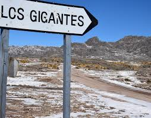

Los Gigantes

...un acercamiento al paraíso...
Macizo al norte de las Sierras Grandes de Córdoba.
Es una formación de entre 300 y 350 millones de años.
¡Parece un laberinto de grandes piedras graníticas con siluetas multiformes!.
Uno de los centros de escalada en roca más importantes del
país.
Sus paredes cuentan con 400 rutas equipadas de escalada deportiva.
Los ríos y arroyos proveen un caudal estable todo el año.
Se debe recorrer con mucha atención
por los senderos marcados.
|
|
 |